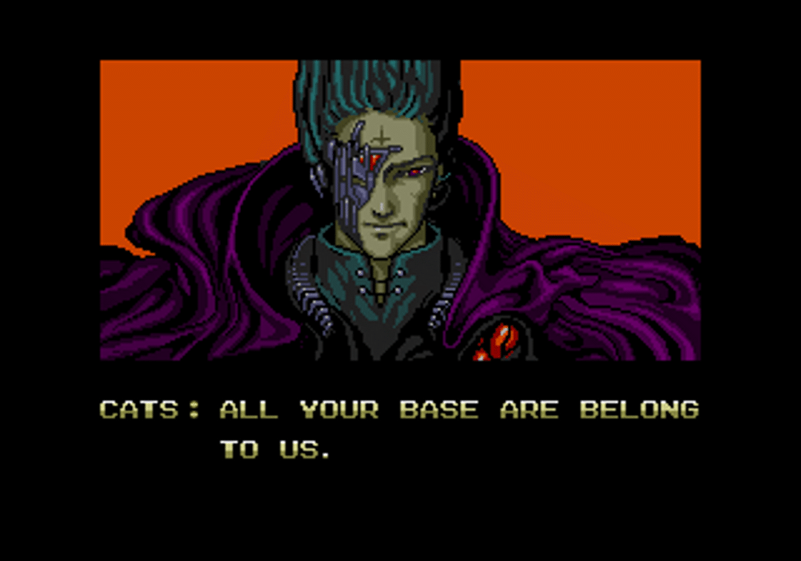

Summary

I am a graduate student in the Bachelor's and Master's (BAM) program in Quantitative Economics at the University of Hawaiʻi at Mānoa, with a focus on econometric modeling and data-driven analysis. My central academic passion is using rigorous analytical tools to dissect and understand the complex systems that shape our world.
My quantitative work is deeply informed by a broad foundation in the liberal arts, which instilled in me a holistic perspective. I believe that economic models are most powerful when they account for the human context—the sociological, historical, and ethical dimensions that drive decision-making. This interdisciplinary lens allows me to move beyond the numbers to ask more nuanced, policy-relevant questions.
As an aspiring researcher, my goal is to contribute to work that is not only analytically sound but also inclusive and ethically grounded. My current interests lie at the intersection of development economics, corporate responsibility, and behavioral game theory. This website serves as a living portfolio of my academic projects, research explorations, and professional journey.
Work
Education & Research
- University of Hawaiʻi at Mānoa
- M.A. in Economics (In Progress)
- B.A. in Quantitative Economics
- Professional Licensing
- Certified General Appraiser, State of Hawaiʻi (2023 – Present)
- Licensed Real Estate Appraiser, State of Hawaiʻi (2020 – 2023)
- Current Research
- Master's Thesis (In Development): An experimental study on strategic behavior in political economics and game theory.
- Future Goal: Pursuing a Ph.D. in Economics via a Pre-Doctoral research fellowship.
Leadership & Teaching
- President (Previously Vice President, Treasurer)
- Manoa Economics Association (MEA)
- Developed and promoted a club mission to broaden undergraduates' understanding of economics beyond finance.
- Established and managed a guest speaker series to illuminate career paths and research areas.
- Served as the primary representative for the organization, growing student engagement.
- Managed the club's budget and secured operational funding through the university's RIO system.
- Teaching Assistant
- Principles of Microeconomics (ECON 130)
- Mentored students during flexible office hours, clarifying complex microeconomic concepts.
- Presented course material and led review sessions to prepare students for examinations.
- Assisted the professor with grading to ensure fair and consistent evaluation.
Global Experience
- Intern, Guest Services
- Fred Olsen Cruise Lines, European & North African Itineraries
- Acted as a central communication liaison between international guests and shipboard departments.
- Developed strong adaptability while working with a diverse international crew.
- Demonstrated grace under pressure during shipboard emergencies.
About

My professional and academic journey is built on a dual foundation: rigorous quantitative training in economics and a deep curiosity about the human systems that shape our world.
My path to economics was not linear. It began with a broad exploration of the liberal arts—from astronomy and physics to sociology and history. This foundation instilled in me an interdisciplinary perspective and a conviction that the most pressing challenges can't be understood through a single lens. Today, as a graduate student in the Quantitative Economics BAM program at the University of Hawaiʻi at Mānoa, I bring this holistic viewpoint to my work, seeking to understand the story behind the data.
This belief in bridging theory and practice is also reflected in my professional life. As a State-Certified Appraiser in Hawaiʻi, I have hands-on experience in market analysis and valuation. This role has been a real-world laboratory, grounding my academic models in the tangible factors that drive economic behavior.
Beyond my academic and professional work, I am passionate about building community. As President of the Manoa Economics Association, I focused on a mission to demystify our field for undergraduates, showing them that economics is not just about finance, but a powerful tool for understanding efficiency, policy, and real-world impact. This leadership experience, along with my time working with a diverse international crew on cruise ships in Europe and North Africa, solidified my commitment to fostering inclusive and collaborative environments.
My goal is to pursue a Ph.D. in Economics, where I can continue to explore complex questions at the intersection of policy, strategic behavior, and human decision-making. I am driven to contribute to research that is not only analytically sound but also ethically grounded and socially conscious.
Thank you for visiting my site.
Contact
To get in touch, please click the button below to open your default email client (e.g., Thunderbird, Outlook, Gmail).
The Bases
